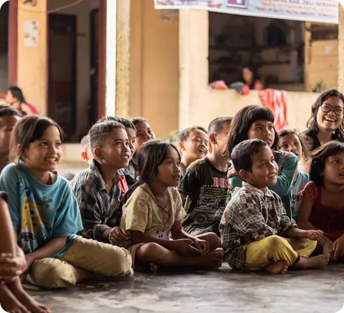

Our Mission
Swadharma Foundation envisions establishing accessible and compassionate Pediatric Palliative Care services in Coimbatore, ensuring that children with life-limiting conditions receive holistic care, dignity, and support.

Welcome To Swadharma Foundation
Swadharma Foundation is a non-governmental social service organization established on July 14, 2022, in Coimbatore, Tamil Nadu. The Trust was founded by Ms. K. Aruna (Founder) and Mr. K.G. Abishek (Co-Founder), both driven by a deep-rooted commitment to social equity and human dignity.
The name Swadharma is derived from the Sanskrit principle meaning "Purpose of Life" a philosophy that guides every programme and initiative carried out by the Foundation. From its very inception, the organization has attracted like-minded individuals, volunteers, and donors who share the collective vision of uplifting the underprivileged.
The Foundation primarily focuses on two underserved communities: individuals with physical and sensory disabilities, and tribal families living in remote regions. Through targeted interventions ranging from material aid and healthcare support to education and vocational training Swadharma strives to create a more equitable and compassionate society.
Learn about the mission and vision of Swadharma Foundation and its commitment to empowering communities through compassion, inclusion, and sustainable development.
Swadharma Foundation is dedicated to empowering persons with disabilities and tribal communities by improving their socio-economic conditions through inclusive and sustainable development initiatives. The organization focuses on creating equitable opportunities that promote dignity, independence, and long-term well-being.
Swadharma Foundation envisions establishing accessible and compassionate Pediatric Palliative Care services in Coimbatore, ensuring that children with life-limiting conditions receive holistic care, dignity, and support.
To build a compassionate and inclusive society where every individual has equal opportunities, access to resources, and the freedom to live with dignity, confidence, and purpose. We envision communities that thrive through collaboration, equality, and sustainable progress.
Swadtharma Foundation was born from a passion for helping people move and live pain-free. Our founder Mouli Balaraman, driven by this very passion, embarked on a remarkable journey that led to the creation of a trusted physiotherapy practice serving communities across multiple locations.
The story begins in India, where our founder graduated with a degree in physiotherapy in 1998. Even during his internship, his vision was clear: to become a private practitioner. He had already secured clinic space and equipment, ready to march on this dream.